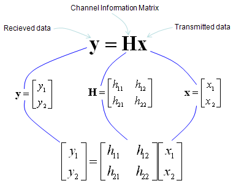
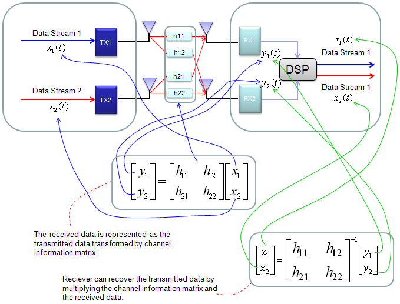
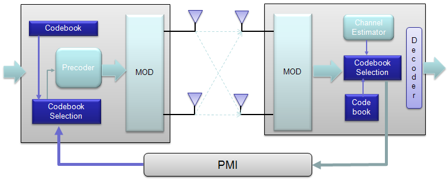
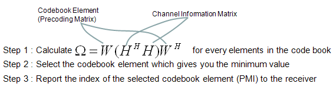

LTE Basic Procedure Go Back To Index Home : www.sharetechnote.com
MIMO(Multiple Input Multiple Output)
I think everybody would know what MIMO is. Simply put, it is a technique to increase the data throughput by using multiple transmitter antenna and multiple reciever antenna. So.. overall concept is simple, but detailed process and implementation is not as simple as you may think. Unfortunately -:), it would be almost impossible to understand the details without going through underlying mathmatics. Actually math itself is not that complicated but interpreting the math and translate the math into real implementation is difficult. I hope my math section in this site would helpful on this. (Please see the Engineering Math - Matrix as you go along this section).
Try googling "MIMO introduction", "MIMO Tutorial" for general understanding . I will try to cover the math part here. I will use 2 x 2 MIMO in this section for simplicity.
In case of 2 x 2, overall data transmission process can be illustrated as follows. The red arrow and four blocks (h11,h12,h21,h22) between the two antenna is to illustrate the possible data path between the two Tx and two Rx antenna.

h11, h12,h21,h22 are special numbers (coefficient) to show how much of the data is going through each of the possible path. The greater the value is, the larger portions of data is being transmitted in that path. A matrix which is made up of these channel path coefficient is called "Channel Information Matrix". The reciever and transmitter relationship is represented as follows.

As I said the math itself is very simple. It would be like a first example at the first chapter of any linear algebra book. The important this is how to interpret this equation into real implementation. If I interpret it in an illustration, it would be as the path represented in green arrows. By this way, we can mathematically represent the recieved data (data distorted by the air path between transmitter and reciever antenna), but just calculating the recieved is not our goal (not the function of the reciever). Our goal is to extract/figure out the 'transmitted data (original data)'. Mathematically this is also simple and it is represented in green arrows.

As you see in the process illustrated in green arrow, to recover the transmitted data (original data) from the received data we need to take inverse of the channel information matrix. Unfortunately there are a couple of issues with this method.
i) Not all matrix is invertable. There are some matrix for which inverse matrix does not exists. (Please refer to Matrix section and see what kind of matrix is the one which is not invertable).
ii) Calculating the inverse matrix is not the simple process.
To workaround these problems, we change the channel information matrix into three matrices by the method called SVD(Singular Value Decomposition). See the SVD section in Marix page and clearly understand the meaning of this process. Probably my page would not be enough to give you full understanding about SVD. Google as much materials about this as possible and try to have some "Intuitive" understanding of the concept.
When we apply any mathematical technique in engineering area, it should be meaningful in the engineering sense and should be implementable. The meaning and implementation of SVD can be illustrated as follows.

The important point is that by implementing this method, we can express the channel information matrix as a simple 'diagonal matrix'. That diagonal matrix is expressed as follows and can be illustrated as follows. Isn't it look simple and clear ? -:)

For some MIMO implementation (e.g, TM4 in LTE = Closed Loop MIMO), you estimate the channel and select a specific precoding matrix and send it back to the receiver as shown below.

The algorithm by which UE select the codebook which is best fit for the channel at specific moment is as follows.

Once a specific codebook element (precoding matrix) is selected as shown here, that precoding matrix is used to transform the incoming bits as explained in Precoding section.